蕎麦の香りを楽しむ日も、今週の献立に出会う日も。松本・手毬で、お昼のひとときを。
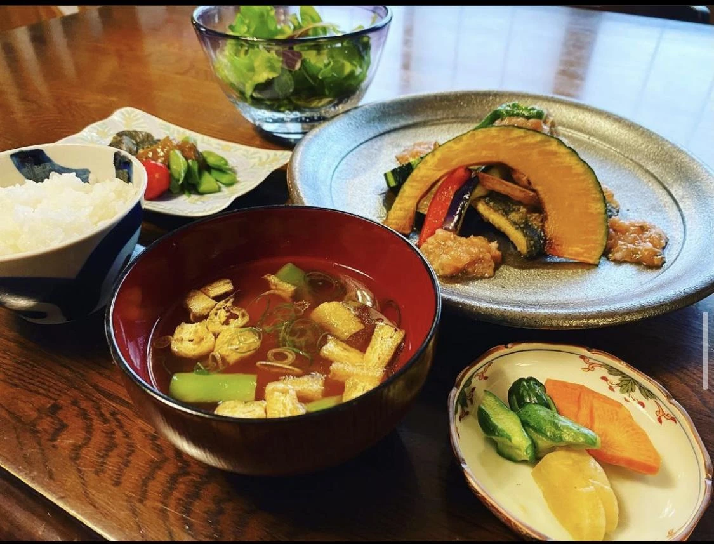
11:30〜14:00 ラストオーダー
月曜日・火曜日祝日もお休みです
信濃荒井駅から徒歩1分駐車場あり ↗
信濃荒井駅から徒歩1分。手毬は、手打ち蕎麦と週替わりのおまかせをご用意する、松本・島立のお食事処です。
お昼は11:30から、14:00ラストオーダー。今週の献立やお休みの案内はInstagramでお知らせしています。お越しの前に、どうぞご覧ください。
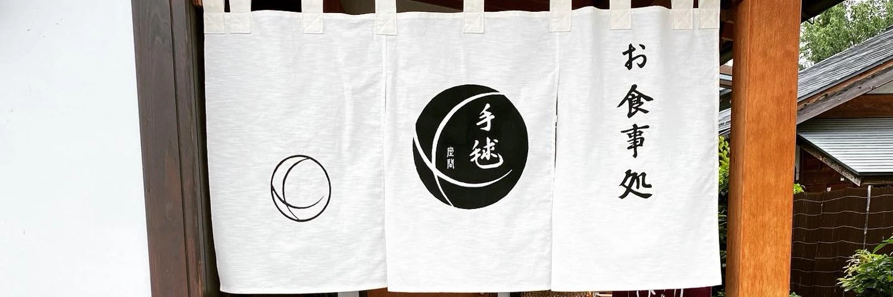
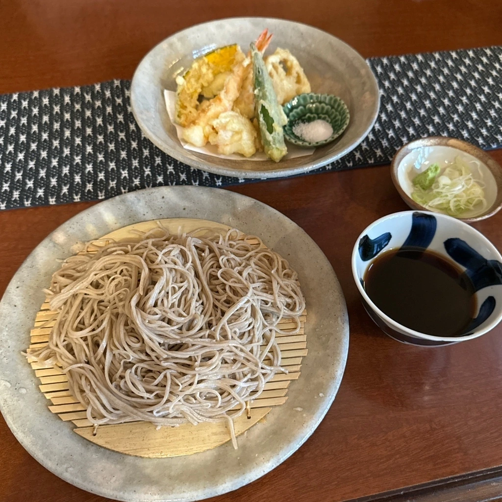
蕎麦の香りと食感を、ひと口ずつ。手打ち蕎麦をじっくり味わうお昼に。
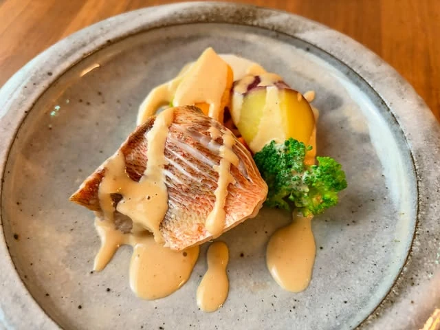
毎週水曜日に献立が変わる、おまかせ料理。「今週は何だろう」と、訪れる楽しみに。
公式Instagramに掲載された料理写真です。写真は過去の提供例です。今週の献立は店舗へご確認ください。
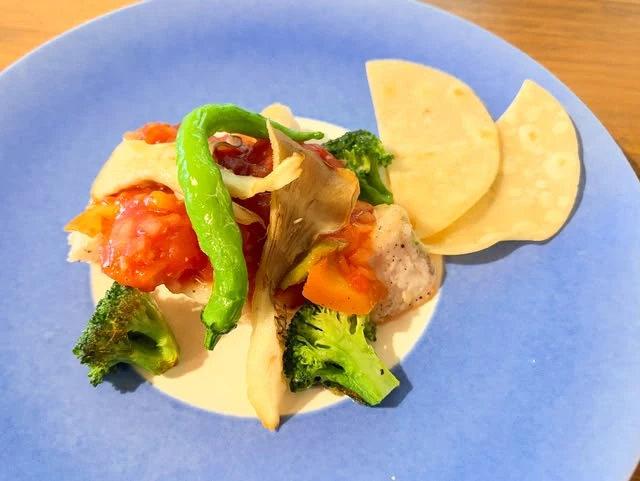
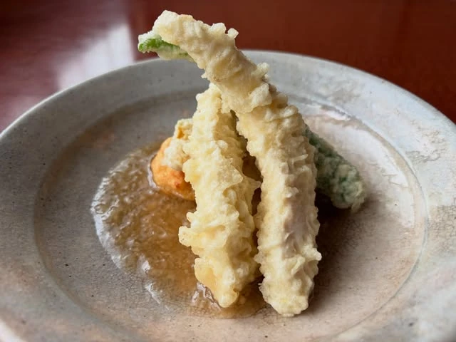
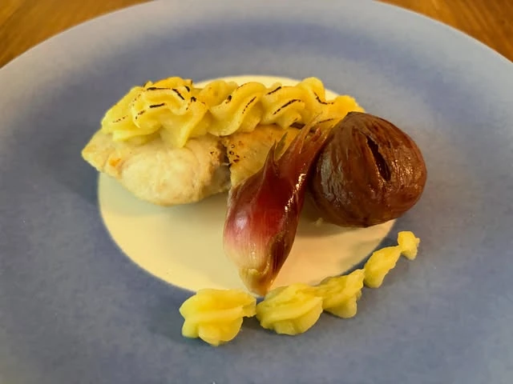
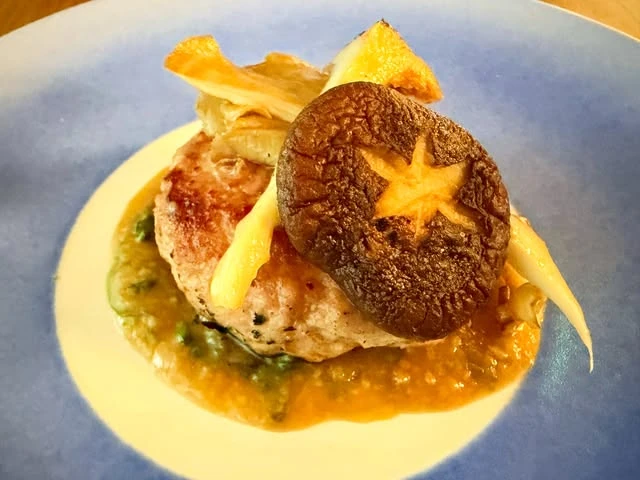
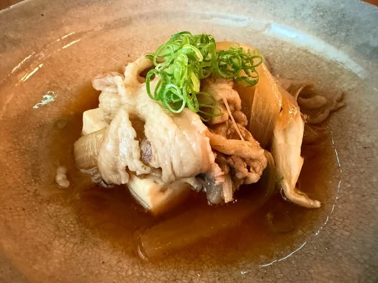
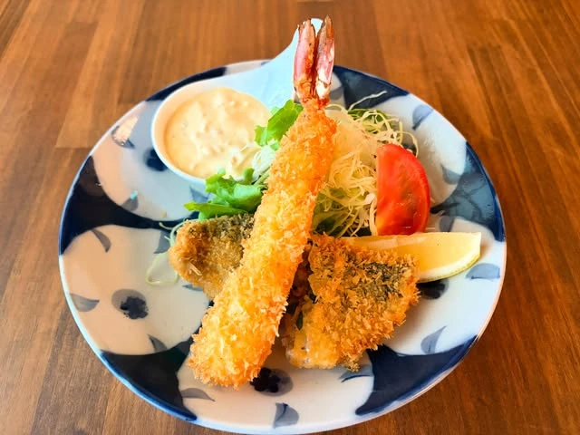
先付やスープから、おまかせの料理、手打ち蕎麦へ。2026年2月の来店記録には、一皿ずつ味わう食事の流れが紹介されています。
過去の提供例です。現在の献立は店舗へご確認ください。
〒390-0852長野県松本市島立25-3
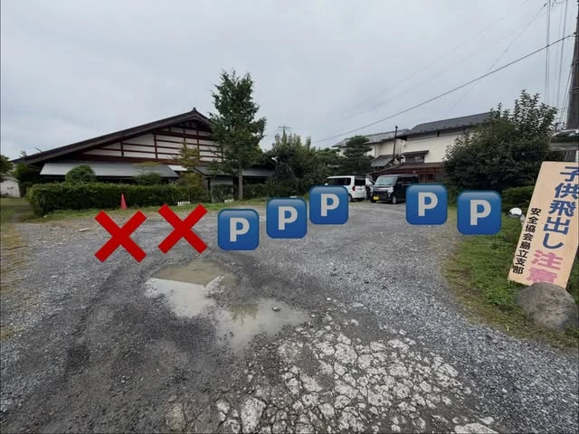